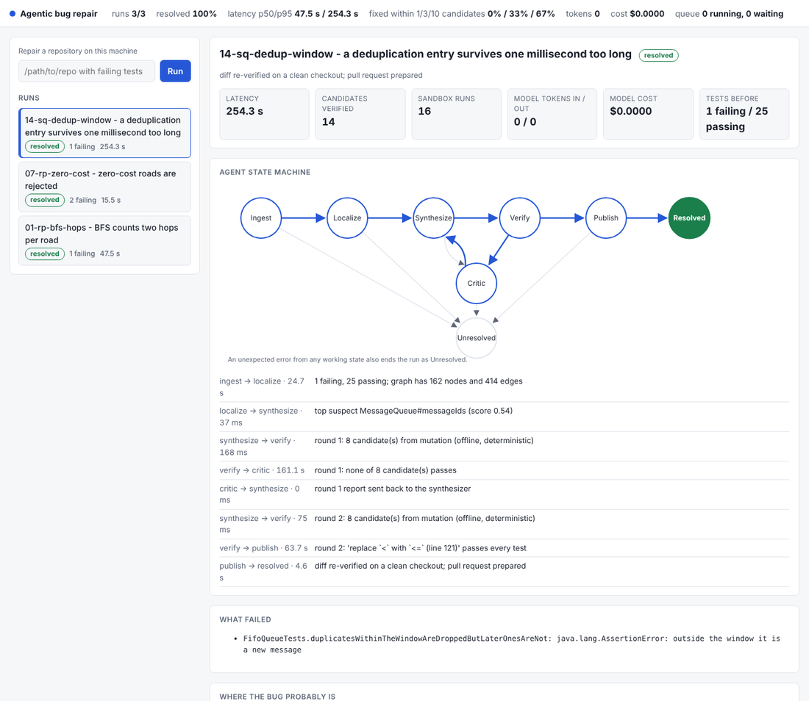

What it does
The agent takes a Java repository with failing tests, indexes the code into a graph, localizes the bug, proposes a small unified diff, runs every candidate in an isolated sandbox, feeds the failures back, and only publishes a diff that passes all tests on a clean checkout. It runs from the command line, or as a service that reacts to failed GitHub builds and shows its work on a dashboard.
It has no dependencies: the JDK compiler API is the parser and com.sun.net.httpserver is the server. It is about 6,000 lines of Java, 470 of browser code and 154 tests, small enough to read in one sitting.
A real run on a seeded bug (addRoad rejected a cost of 0 because it checked <= where < was needed):
INGEST --READY--> LOCALIZE (6620 ms) 2 failing, 17 passing; graph has 131 nodes and 335 edges; measured coverage for 19 tests
LOCALIZE --SUSPECTS_FOUND--> SYNTHESIZE (74 ms) top suspect Graph#addRoad (score 0.98)
SYNTHESIZE --CANDIDATES_READY--> VERIFY (158 ms) round 1: 8 candidate(s) from mutation
VERIFY --ALL_TESTS_PASS--> PUBLISH (3613 ms) round 1: 'replace `<=` with `<` (line 69)' passes every test
PUBLISH --PUBLISHED--> RESOLVED (2430 ms) diff re-verified on a clean checkout; pull request prepared
- if (cost <= 0) throw new IllegalArgumentException("negative cost ...");
+ if (cost < 0) throw new IllegalArgumentException("negative cost ...");
How it works
- Code graph. The JDK compiler parses and attributes every file, so a call edge points to the exact overload that is called, not to a name match. Nodes are classes, methods and fields; edges are calls, imports, inheritance and field writes. Calls through an interface fan out to every implementation.
- Retrieval. Okapi BM25 and a feature-hashed vector, merged by reciprocal rank fusion. Around a suspect, a two-hop traversal collects callers, callees, the fields it writes and the tests that reach it.
- Measured coverage. An instrumented copy of the repository gets a probe at the top of every method (on the same line, so stack traces keep their line numbers) and runs the tests once: each test reports which methods it really executed. If that copy does not build, the call graph stands in, which counts every method a test could reach.
- Fault localization. Each method gets a score from five signals: spectrum (Ochiai suspiciousness over the measured coverage), stack frame, proximity to the failing test, text match with the failure message, and a logic prior that demotes setup methods with no decisions or arithmetic, where a logic bug cannot live. The weights were chosen on the dev half of the benchmark only.
- Patch synthesis. The default synthesizer needs no model: it tries single-edit mutations (13 operators, such as flipping
<and<=) inside the top three suspects. A model-backed synthesizer sits behind the same interface. - Gate and verification. A patch may only change existing non-test source files, and at most 40 lines, so the agent cannot “fix” a test by editing it. Each candidate is built and tested in a sandbox and compared with the baseline: which tests it fixed, which previously passing tests it broke. The final diff is verified once more on a clean copy.
- Sandbox. A throwaway copy of the repository, an empty environment (no tokens inherited), CPU, memory and file-size limits, a watchdog that kills the process tree, and a private network namespace. A Docker sandbox is used automatically when a Docker daemon answers.
- Service. The GitHub webhook checks an HMAC-SHA256 signature in constant time before parsing the body, de-duplicates deliveries, and only clones repositories on an allow-list. Work goes through a bounded queue that answers
429when full.
What I measured
The benchmark holds 20 seeded bugs in three small Java repositories (the route planner, the order service and the queue), split into 10 development and 10 test cases. I seeded the bugs myself. The localization weights were chosen by a grid search on the development cases only; the test cases were not used to choose anything.
Where is the bug?
Rank of the true buggy method among the suspects (MRR: mean of 1/rank; 1.0 means always first):
| Signals | top-1 | top-3 | top-5 | MRR | MRR, test half |
|---|---|---|---|---|---|
| stack trace only (baseline) | 15% | 15% | 15% | 0.15 | 0.20 |
| trace + text (no coverage) | 25% | 30% | 45% | 0.34 | 0.38 |
| spectrum, call-graph coverage | 15% | 30% | 45% | 0.31 | 0.31 |
| spectrum, measured coverage | 30% | 45% | 75% | 0.48 | 0.45 |
| all signals, previous weights | 20% | 40% | 40% | 0.34 | 0.36 |
| tuned weights + logic, call-graph coverage | 40% | 70% | 80% | 0.57 | 0.57 |
| tuned weights + logic, measured coverage (default) | 55% | 70% | 80% | 0.66 | 0.61 |
Can it fix it?
With the offline mutation synthesizer (no model) and three self-correction rounds, 9 of 20 bugs now pass every test on a clean checkout, up from 4 (5 development, 4 test). Checked by hand, 8 are correct: 7 restore the original source exactly and 1 is equivalent to it. Resolved runs took a median of 73 seconds.
What the numbers say:
- Measured coverage made the spectrum signal useful (MRR 0.31 to 0.48 on its own): the call graph counts every method a test could reach, so in large classes the failing tests seemed to reach dozens of methods.
- Most of the gain came from re-weighting. With the tuned weights, call-graph coverage already scores 0.57 on both halves; measured coverage adds 0.15 on the development half but only 0.04 on the test half, which with 10 bugs is within noise.
- One “fix” was wrong and every test passed. For a bug that made 2-opt loop forever, the agent turned
i < best.length - 1intoi > best.length - 1: 2-opt no longer runs at all, so it no longer hangs. The tests check that 2-opt never makes a route worse, not that it improves one. This is the known weakness of test-based repair, and why the pull request is a draft a person approves. - Where it still fails: none of the 5 bugs that need new code; and 5 one-edit bugs whose method is ranked 4th to 11th, below the three suspects the synthesizer mutates.
- Earlier, the benchmark found a real bug in my own sandbox: the network namespace had its loopback device switched off, so HTTP tests could never pass inside it. It is fixed and tested.
How it is tested
- The diff engine is checked against
git applyin both directions, including a 120-case fuzz, and refuses path traversal and partial application. - The state machine’s table is checked for reachability, terminal states, and an error edge from every working state.
- The pipeline runs end to end on a seeded bug, and with scripted synthesizers for critic feedback reaching round 2, a regression being refused, a patch that edits a test being rejected before the sandbox, a candidate that loops forever, and a final diff that fails re-verification.
- Sandbox tests check isolation, not just success: the caller’s directory is untouched, no secrets in the environment, children die with the parent, a fork bomb trips the limit, runaway output is capped.
- The service is tested over real HTTP: every webhook status code, duplicates, backpressure, oversized bodies, API keys, and the browser-attack checks.
- I planted 14 bugs in the code itself (a weakened signature check, a removed policy check, a skipped final re-verification, …) to see whether the tests notice. They did, after I added two tests for the two that first survived.
What it doesn’t do
- It is not SWE-bench-capable. Without a model it fixes bugs that are one small edit away. The model-backed path is tested only against stubs; I have not run it against the live API and make no claim about how well it works.
- Docker isolation has not been exercised. The tests check every flag of the command line, but the machine it was built on had no Docker daemon.
- A real GitHub pull request has not been opened. The publisher is tested against a local remote and a fake API.
- The benchmark bugs were seeded by me, so they are plausible logic bugs, not a sample of real-world ones, and 10 bugs per half is small. The figures are not comparable with SWE-bench scores.
- Java only, and only projects whose tests print
PASS/FAILlines the bundled way.